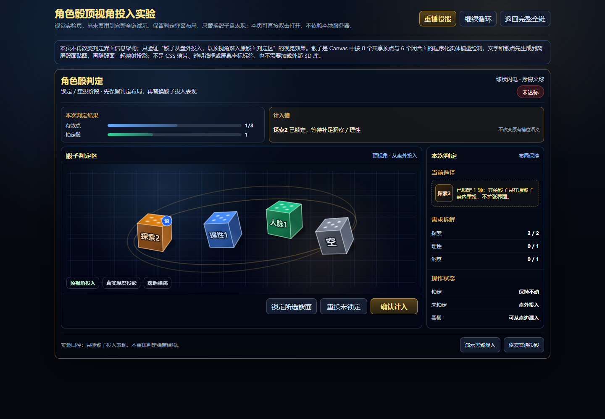
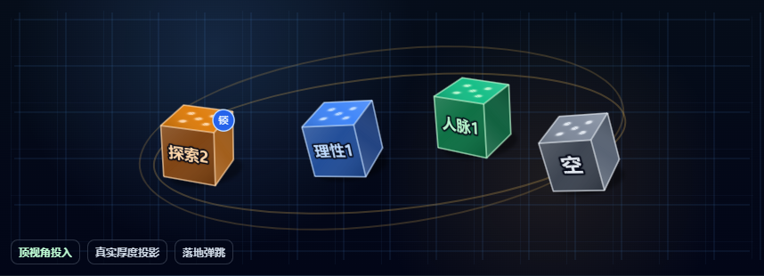
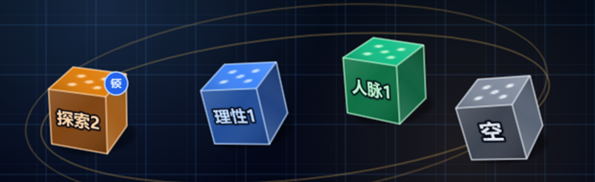
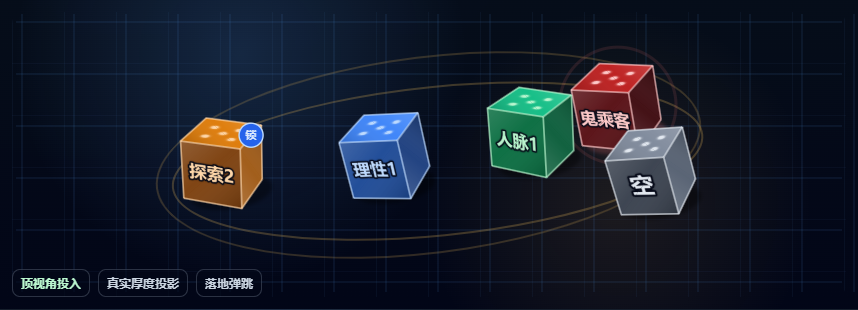

01 · 整页布局
保留判定摘要、计入槽、骰子判定区、右侧状态和底部按钮的相对关系，只替换盘内骰子绘制。

本次只修改独立视觉实验页 `dice-animation-lab.html`，不套用到完整全链试玩。验收重点是：原判定弹窗布局保持，骰子盘内部从面片 / 透明线框 / 屏幕标签感改为不透明实体骰；文字和骰点先生成到骰面贴图，再随面一起投影。
保留判定摘要、计入槽、骰子判定区、右侧状态和底部按钮的相对关系，只替换盘内骰子绘制。

局部检查骰子是否仍像薄片、透明线框或后贴屏幕标签。当前版本使用不透明面底，并把文字和骰点作为贴图映射到骰面。

放大检查四颗骰子的面块、文字、骰点与边线。文字和骰点随各自骰面一起透视变形，不再独立浮在屏幕坐标上。

黑骰混入状态同样检查不透明面、文字贴图化、可读性和实体遮挡关系。
